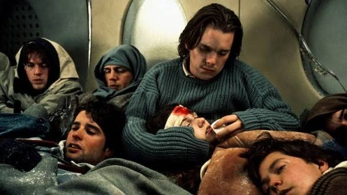

✈️ 🏔️🥶🥩ALIVE (1993) — CERTIFIED MGC F-17

🏛 ⚖ MGC LOWER COURT DOCKET
- ASSET TITLE: ✈️ 🏔️ 🥶 🥩 ALIVE (1993) – The 1972 Andes Flight 571 Survival Strike
- OFFICIAL REGISTRY GRADE: Certified MGC F-17 (Fine / Heavily Circulated Hollywood Sanitization Specimen)
- LOWER COURT JURISDICTION: Lower Tribunal Room / Historical Survival & Drama Docket
- CASE FILE: #105
- PRESIDING DOCKET: MGC Judge Bob & Chief Justice MGC
📜 THE FORENSIC NARRATIVE BREAKDOWN & LUSTER LOG
While the Movie Grading Consensus (MGC) typically awards a strong true-story premium to real historical survival accounts, Frank Marshall’s 1993 adaptation of Piers Paul Read’s book suffers severe surface wear under our 5x lens. Despite a visceral, terrifying opening plane crash sequence and breathtaking mountain location photography, the film’s relentless 1990s Hollywood gloss, clean-cut casting, and sanitized depiction of 72 days in the freezing Andes strip away its raw historical authenticityem>-dropping this specimen straight into the Fine (F-12 to F-19) Registry:
1. Sanitized Hollywood Gloss & Clean-Cut Casting
- Instead of conveying the gaunt, frostbitten, emaciated reality of the Uruguayan rugby team stranded at 11,000 feet, the cast—led by Ethan Hawke and Vincent Spano—looks suspiciously well-fed, groomed, and cleanly lit throughout two months of sub-zero starvation.
2. After-School Special Melodrama & Speechifying
- Heavy-handed, sentimental dialogue and clunky moral debates replace the raw psychological desperation of the actual survival ordeal, flattening the narrative into a glossy 1990s network-TV drama.
3. Pacing Drag & Repetitive Snowbound Blocking
- Once the visceral, white-knuckle plane crash ends in the opening act, the middle hour bogs down in repetitive cabin conversations, avalanche filler, and sluggish dramatic momentum before Nando Parrado and Roberto Canessa finally hike out for rescue.
4. Cultural & Linguistic Disconnect
- Casting American actors speaking standard Californian English—narrated by an inexplicably formal John Malkovich voiceover—dilutes the authentic Uruguayan cultural identity of the real survivors.
⚖️ 🔍 THE FINAL DECREE & CERTIFIED JUDGMENT
- The Final Executive Verdict: Although the harrowing opening fuselage crash and real-life heroism of Nando Parrado and Roberto Canessa’s 10-day trek across the Andes preserve enough baseline structural integrity to keep this coin above Very Good (VG) territory, its sanitized Hollywood polish, sluggish mid-film pacing, and TV-movie melodrama permanently seal it at a Certified MGC F-17.
MGC Judge Bob slams his wooden gavel down with a crisp pop. Case Closed! ✈️🏔️🥶🥩

• © 2026 MOVIE GRADING CONSENSUS. All Sovereign Rights Reserved.